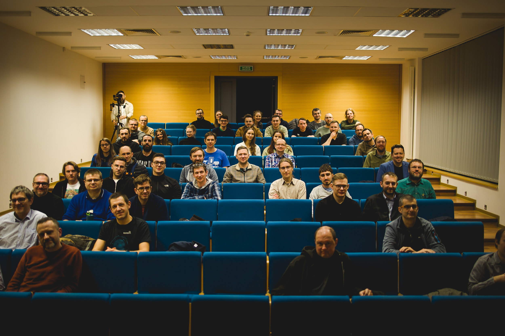

Społeczność
Przyjdź pół godziny wcześniej i poznaj nas. Otwieramy salę wcześniej przed każdą prelekcją, żeby zachęcić do networkingu!

Java User Group • Toruń
Przyjdź i opowiedz nam swoją historię!
Spotykamy się cyklicznie w ostatnią środę miesiąca w godzinach 18:00–20:00 na Wydziale Fizyki, Astronomii i Informatyki Stosowanej UMK w Toruniu przy ulicy Grudziądzkiej 5/7.
Lokalna społeczność Java
Toruń JUG (Java User Group) zrzesza pasjonatów technologii opartych o Java Virtual Machine, dla których programowanie to nie tylko praca, ale przede wszystkim hobby i dobra zabawa. Chcemy stale rozwijać naszą wiedzę i umiejętności programistyczne, a także zacieśniać więzy naszej lokalnej społeczności. W tym celu organizujemy cykliczne spotkania.
Przyjdź pół godziny wcześniej i poznaj nas. Otwieramy salę wcześniej przed każdą prelekcją, żeby zachęcić do networkingu!
Tematyka oscyluje wokół JVM, ale nie unikamy żadnego tematu przydatnemu programiście. Każde spotkanie jest nagrywane i publikowane na naszym kanale YouTube.
Po każdej prezentacji spotykamy się na afterparty.
Toruń JUG w liczbach
Przeżyj to jeszcze raz
Jeśli przegapiłeś nasze spotkanie, nic straconego! Nagrania z prelekcji publikujemy na naszym kanale YouTube.
Pełne archiwum wydarzeń znajdziesz na Meetup .
Więcej niż comiesięczne spotkania
Toruń JUG Day jedyne w swoim rodzaju całodniowe spotkania z dodatkową dawką integracji a nawet muzyki na żywo.
Poznaj organizatorów
Członek zespołu Toruń JUG, obecnie wytwarzający software w sposób zwinny dla Soonly Finance. Poza godzinami pracy szukający chwil na filiżankę dobrego dripa oraz darcie paszczy i szarpanie strun gitary w garażowym bandzie.
Członek zespołu Toruń JUG, starszy inżynier oprogramowania w Allegro i współprowadzący zajęcia z backendu dla studentów na UMK. Wolny czas spędza na biegowych ścieżkach i górskich szlakach.
Członek zespołu Toruń JUG, pracujący w i4b. Po pracy ogrywa planszówki z żoną oraz zwiedza miejskie fyrtle na rowerze.
Wspierający naszą społeczność
Dołącz do nas
Chcesz współtworzyć JUGa i pomóc nam rozwijać społeczność w Toruniu? Albo, chciałbyś rozwinąć skrzydła jako mówca konferencji? A może poszukujesz partnera do współpracy w zakresie promocji lub pozyskiwania pracowników?
Skontaktuj się z nami